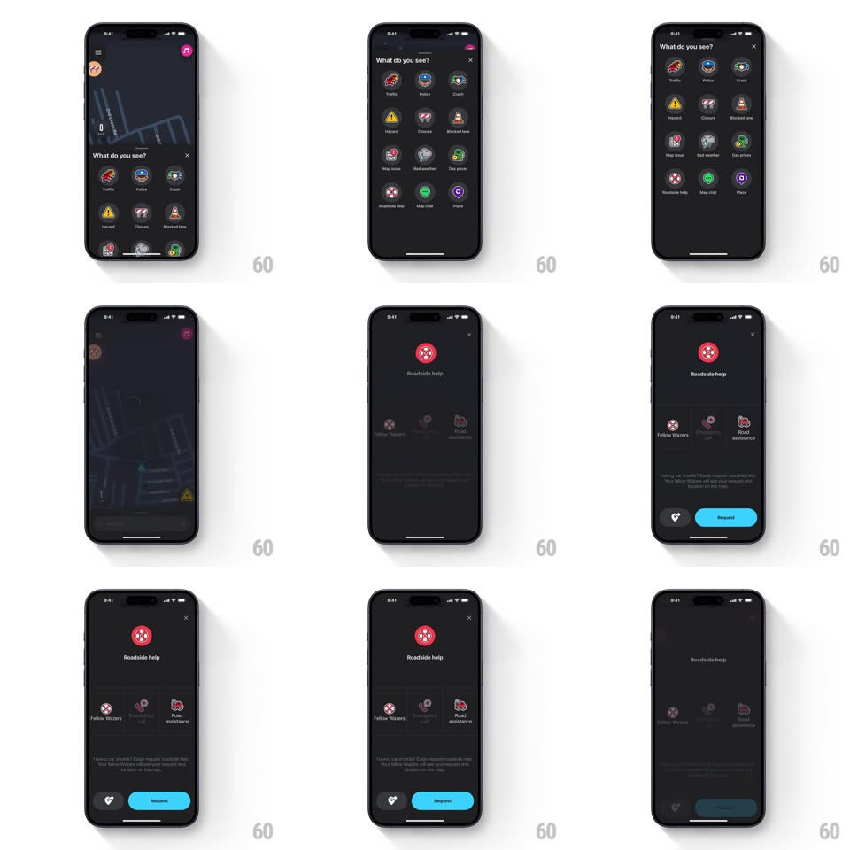

Media
Frame-by-frame

Rebuild this interaction 1:1: Waze's roadside-help flow - the report grid expands full-screen, a brief spinner bridges the gap, and the dedicated help screen springs in with its two assistance options.

Rebuild this interaction 1:1: Waze's roadside-help flow - the report grid expands full-screen, a brief spinner bridges the gap, and the dedicated help screen springs in with its two assistance options. ## Integration Integration: stack-agnostic spec - springs given as stiffness/damping, timed motions as duration + curve; map every value to your framework and animation library of choice. ## Scene "What do you see?" as a full-screen dark grid (Traffic, Police, Crash, Hazard, Closure, Blocked lane, Map issue, Bad weather, Gas prices, Roadside help, Map chat, Place). The destination: a "Roadside help" screen - large red tire icon, two options (Fellow Wazers, Road assistance), safety disclaimer text, and a bottom bar (heart icon + blue Request pill). ## Motion spec Pattern: sheet-to-screen transition with a loading bridge. - Tap Roadside help: the tapped icon pulses (scale 1.15 and back, 200ms, haptic) while the grid's other icons fall away (translateY 24px + fade, 200ms, staggered 25ms top-down). - The sheet expands to full screen (corner radius 24 to 0, height spring ~340/26); during the expansion the content crossfades to a centered loading spinner (a teal arc rotating at 1rev/900ms on a dark chip). - The spinner holds only as long as content loads (300-800ms), then arcs shut (stroke contracts, 150ms) as the Roadside help screen's elements spring in: red icon pops (scale 0.6 to 1, spring ~400/18), title fades up, then the two option icons stagger in (translateY 16px + fade, 220ms, 80ms apart), each with a subtle settle bounce. - The bottom bar slides up last (translateY 100% to 0, 250ms) with Request enabling in blue. - Choosing an option highlights it (icon gains a light ring, 150ms) and Request pulses once (scale 1.04, 150ms). - Back: the screen contracts into the grid, icons rising back into place in reverse stagger. ## Calibration - Keep the whole flow dark-mode (near-black surfaces, blue accent); the red icon is the only warm element. - The spinner bridge must feel intentional: minimum display 300ms so it never flickers. ## Reduced motion Simple crossfade between grid and help screen; spinner omitted. ## Don't miss - The disclaimer text is small and low-contrast gray - present but quiet. - The two options are icon-first with tiny labels; no list rows or chevrons.